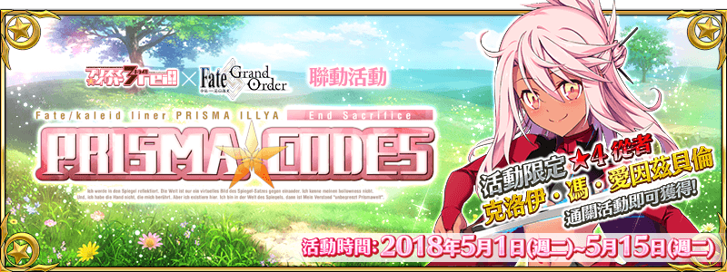

本頁面資訊僅供參考，實際情況請以遊戲內資料為準。
由於直接使用官方翻譯，可能會與其他站內翻譯相異，敬請見諒。
其他公告內容請參照日版當時公告翻譯。


- 主線關卡
-
prolog 被遺棄的少女們的墓碑 消耗AP 推薦Lv. 初次報酬 開放條件 5 10 通過：Grand Order 〉 職階傾向 QP Exp 絆 

1,400 275 115 Wave 1 1  Lv.10 馴鹿人 HP5,998
Lv.10 馴鹿人 HP5,9982 Lv.20 雪人 HP11,8553 Lv.10 馴鹿人 HP5,998掉落總合機率
(可能掉落箱數)22200%(2) 100%(1) １ins 奇奇怪怪的糖果之國【Ⅰ】 消耗AP 推薦Lv. 初次報酬 開放條件 0 1 無 通過：prolog 被遺棄的少女們的墓碑 １ins 奇奇怪怪的糖果之國【Ⅱ】 消耗AP 推薦Lv. 初次報酬 開放條件 5 10 通過：１ins 奇奇怪怪的糖果之國【Ⅰ】 〉 職階傾向 QP Exp 絆 1,400 275 115 Wave 1 1 Lv.7 餅乾魔偶 HP4,726Wave 2 1 Lv.15 餅乾魔偶 HP13,5732 Lv.7 餅乾魔偶 HP4,726掉落總合機率
(可能掉落箱數)2300%(3) １ins 奇奇怪怪的糖果之國【Ⅲ】 消耗AP 推薦Lv. 初次報酬 開放條件 0 1 無 通過：糖果之國 EXTRAⅠ
達成：No.2２wei! 大海原與龍之國 【Ⅰ】 消耗AP 推薦Lv. 初次報酬 開放條件 0 1 無 通過：World End Match 童☆謠 ２wei! 大海原與龍之國 【Ⅲ】 消耗AP 推薦Lv. 初次報酬 開放條件 0 1 無 通過：２wei! 大海原與龍之國 【Ⅱ】 ３rei!! 死亡書架之國 【Ⅰ】 消耗AP 推薦Lv. 初次報酬 開放條件 0 1 無 通過：World End Match 治愈系☆美狄亞 ３rei!! 死亡書架之國 【Ⅱ】 消耗AP 推薦Lv. 初次報酬 開放條件 5 30 通過：３rei!! 死亡書架之國 【Ⅰ】 〉 職階傾向 QP Exp 絆 
3,400 2,190 315 Wave 1 1  Lv.20 報喪女妖 HP31,701
Lv.20 報喪女妖 HP31,7012 Lv.26 報喪女妖 HP55,4493 Lv.20 報喪女妖 HP31,701掉落總合機率
(可能掉落箱數)2300%(3) ３rei!! 死亡書架之國 【Ⅲ】 消耗AP 推薦Lv. 初次報酬 開放條件 0 1 無 通過：３rei!! 死亡書架之國 【Ⅱ】 ４ier!!! 雪花與蜂蜜之國【Ⅰ】 消耗AP 推薦Lv. 初次報酬 開放條件 0 1 無 通過：World End Match 偉大之魂♀海倫娜 ４ier!!! 雪花與蜂蜜之國【Ⅱ】 消耗AP 推薦Lv. 初次報酬 開放條件 5 40 通過：４ier!!! 雪花與蜂蜜之國【Ⅰ】 〉 職階傾向 QP Exp 絆 
4,400 5,690 415 Wave 1 1 Lv.20 巨大馴鹿人 HP6,5922 Lv.20 巨大馴鹿人 HP6,5923 Lv.20 雪人 HP9,484Wave 2 1 Lv.23 巨大馴鹿人 HP10,0682 Lv.23 雪人 HP13,5953 Lv.23 巨大馴鹿人 HP10,068Wave 3 1 Lv.43 雪人 HP62,3352 Lv.30 巨大馴鹿人 HP18,9423 Lv.30 巨大馴鹿人 HP19,131掉落總合機率
(可能掉落箱數)22600%(6) 300%(3) ４ier!!! 雪花與蜂蜜之國【Ⅲ】 消耗AP 推薦Lv. 初次報酬 開放條件 5 40 通過：４ier!!! 雪花與蜂蜜之國【Ⅱ】 〉 職階傾向 QP Exp 絆 4,400 5,690 415 Wave 1 1 Lv.23 巨大馴鹿人 HP9,3762 Lv.23 巨大馴鹿人 HP9,3763 Lv.23 巨大馴鹿人 HP9,376Wave 2 1 Lv.26 巨大馴鹿人 HP10,4482 Lv.26 巨大馴鹿人 HP10,4483  Lv.23 超級馴鹿人 HP13,803
Lv.23 超級馴鹿人 HP13,803Wave 3 1  Lv.40 迷你小庫 HP64,649
Lv.40 迷你小庫 HP64,6492 Lv.25 巨大雪人 HP16,1323 Lv.25 巨大雪人 HP16,132掉落總合機率
(可能掉落箱數)22100%(1) 600%(6) 200%(2) ４ier!!! 雪花與蜂蜜之國【Ⅳ】 消耗AP 推薦Lv. 初次報酬 開放條件 0 1 無 通過：４ier!!! 雪花與蜂蜜之國【Ⅲ】 letztes 星原與水晶之國【Ⅰ】 消耗AP 推薦Lv. 初次報酬 開放條件 0 1 無 通過：World End Match 康諾特☆梅芙 letztes 星原與水晶之國【Ⅱ】 消耗AP 推薦Lv. 初次報酬 開放條件 5 50 通過：letztes 星原與水晶之國【Ⅰ】 〉 職階傾向 QP Exp 絆 
5,400 10,190 515 Wave 1 1 Lv.23 魔法杖～ HP9,9652 Lv.23 魔法杖！ HP11,3083 Lv.23 魔法杖？ HP8,496Wave 2 1 Lv.25 魔法杖～ HP14,4162 Lv.25 魔法杖～ HP14,4163 Lv.25 魔法杖～ HP14,416Wave 3 1 Lv.33 魔法杖？ HP72,8492 Lv.33 魔法杖～ HP28,4803 Lv.33 魔法杖！ HP21,544掉落總合機率
(可能掉落箱數)222500%(5) 200%(2) 200%(2) letztes 星原與水晶之國【Ⅲ】 消耗AP 推薦Lv. 初次報酬 開放條件 5 50 通過：letztes 星原與水晶之國【Ⅱ】 〉 職階傾向 QP Exp 絆 5,400 10,190 515 Wave 1 1 Lv.23 魔法杖？ HP8,4962 Lv.23 魔法杖？ HP8,4963 Lv.23 魔法杖～ HP9,965Wave 2 1 Lv.25 魔法杖？ HP12,2912 Lv.25 魔法杖！ HP16,3583 Lv.25 魔法杖！ HP16,358Wave 3 1 Lv.37 魔法杖！ HP90,3992 Lv.33 魔法杖～ HP18,9863 Lv.33 魔法杖～ HP18,986掉落總合機率
(可能掉落箱數)222300%(3) 300%(3) 300%(3) letztes 星原與水晶之國【Ⅳ】 消耗AP 推薦Lv. 初次報酬 開放條件 0 1 無 通過：letztes 星原與水晶之國【Ⅲ】 epilog 風中綻放的鵝掌草 消耗AP 推薦Lv. 初次報酬 開放條件 0 1 通過：World End Match First Lady 魔法紳士．邂逅篇 消耗AP 推薦Lv. 初次報酬 開放條件 0 1 無 通過：epilog 風中綻放的鵝掌草 白面紳士．宿命篇 消耗AP 推薦Lv. 初次報酬 開放條件 0 1 無 通過：魔法紳士．邂逅篇
達成：No.26黑鬍子紳士．謀略篇 消耗AP 推薦Lv. 初次報酬 開放條件 0 1 無 通過：魔法紳士．邂逅篇
達成：No.44藍鬍子紳士．追想篇 消耗AP 推薦Lv. 初次報酬 開放條件 0 1 無 通過：魔法紳士．邂逅篇
達成：No.69翡翠紳士．血淚篇 消耗AP 推薦Lv. 初次報酬 開放條件 0 1 無 通過：魔法紳士．邂逅篇
達成：No.70那應注目的羽化 消耗AP 推薦Lv. 初次報酬 開放條件 0 1 無 通過：魔法紳士．邂逅篇
通過：World End Match 歌☆劇☆魅☆影
通過：World End Match 愛德華☆蒂奇
通過：World End Match 吉爾☆德☆萊斯
通過：World End Match 迪爾姆德☆奧德利暗
達成：No.12Prisma☆Family 消耗AP 推薦Lv. 初次報酬 開放條件 40 90 55/8 0:00~5/15 12:59
通過：World End Match 聖約
達成：No.100〉 職階傾向 QP Exp 絆 
9,400 38,190 915 Wave 1 1 Lv.80 子吉爾 HP87,8582 Lv.75 赫拉克勒斯 HP104,148Wave 2 1  Lv.85 Emiya HP141,108
Lv.85 Emiya HP141,1082  Lv.85 愛麗 HP170,768
Lv.85 愛麗 HP170,768Wave 3 1  Lv.90 Emiya HP210,210
Lv.90 Emiya HP210,2102  Lv.90 伊莉雅 HP235,025
Lv.90 伊莉雅 HP235,025掉落總合機率
(可能掉落箱數)200%(2) 200%(2) 100%(1) 100%(1) - 糖果之國
-
糖果之國 EXTRAⅠ 消耗AP 推薦Lv. 初次報酬 開放條件 10 10 5/1 13:00~5/15 12:59
通過：１ins 奇奇怪怪的糖果之國【Ⅱ】
達成：No.1〉 職階傾向 QP Exp 絆 1,400 275 115 Wave 1 1 Lv.7 餅乾魔偶 HP2,7002 Lv.7 餅乾魔偶 HP2,7003 Lv.7 餅乾魔偶 HP2,700Wave 2 1 Lv.10 偽魔法少女玉藻☆貓 HP7,0342 Lv.9 餅乾魔偶 HP4,2183 Lv.9 餅乾魔偶 HP4,218掉落總合機率
(可能掉落箱數)2100%(1) 500%(5) 糖果之國 EXTRAⅡ 消耗AP 推薦Lv. 初次報酬 開放條件 10 10 5/1 13:00~5/15 12:59
通過：１ins 奇奇怪怪的糖果之國【Ⅲ】〉 職階傾向 QP Exp 絆 
1,400 275 115 Wave 1 1  Lv.10 巧克力骸骨兵 HP2,896
Lv.10 巧克力骸骨兵 HP2,8962 Lv.10 巧克力骸骨兵 HP2,8963 Lv.10 巧克力骸骨兵 HP2,896Wave 2 1 Lv.12 巧克力骸骨兵 HP5,1962 Lv.12 巧克力骸骨兵 HP5,1963  Lv.18 偽魔法少女阿斯托爾福 HP17,056
Lv.18 偽魔法少女阿斯托爾福 HP17,056掉落總合機率
(可能掉落箱數)2100%(1) 500%(5) 糖果之國 Rank D 消耗AP 推薦Lv. 初次報酬 開放條件 15 15 5/1 13:00~5/15 12:59
通過：World End Match 童☆謠∞ 職階傾向 QP Exp 絆 1,900 550 165 Wave 1 1 Lv.10 餅乾魔偶 HP7,4222 Lv.10 餅乾魔偶 HP7,4223 Lv.10 餅乾魔偶 HP7,422Wave 2 1 Lv.17 偽德翁 HP18,9982 Lv.12 餅乾魔偶 HP8,8373 Lv.12 餅乾魔偶 HP8,837掉落總合機率
(可能掉落箱數)24%(5) 3%(1) 150%(5) 200%(2) 0.4%(1) 0.6%(1) 糖果之國 Rank C 消耗AP 推薦Lv. 初次報酬 開放條件 15 15 5/1 13:00~5/15 12:59
通過：World End Match 童☆謠∞ 職階傾向 QP Exp 絆 1,900 550 165 Wave 1 1  Lv.11 巧克力骸骨兵 HP5,486
Lv.11 巧克力骸骨兵 HP5,4862 Lv.11 巧克力骸骨兵 HP5,4863 Lv.11 巧克力骸骨兵 HP5,486Wave 2 1 Lv.14 巧克力骸骨兵 HP8,3122 Lv.14 巧克力骸骨兵 HP8,3123 Lv.18 偽阿塔蘭塔 HP26,325掉落總合機率
(可能掉落箱數)210%(5) 3%(1) 150%(5) 200%(2) 0.4%(1) 0.6%(1) 糖果之國 Rank B 消耗AP 推薦Lv. 初次報酬 開放條件 15 15 5/1 13:00~5/15 12:59
通過：糖果之國 Rank C∞ 職階傾向 QP Exp 絆 1,900 550 165 Wave 1 1 Lv.10 甜點守衛 HP5,5962 Lv.10 甜點守衛 HP5,5963 Lv.10 甜點守衛 HP5,596Wave 2 1 Lv.20 偽弗蘭 HP25,0672 Lv.12 甜點守衛 HP8,8833 Lv.12 甜點守衛 HP8,883掉落總合機率
(可能掉落箱數)23%(5) 3%(1) 150%(5) 200%(2) 0.4%(1) 0.6%(1) 糖果之國 Rank A 消耗AP 推薦Lv. 初次報酬 開放條件 20 20 5/1 13:00~5/15 12:59
通過：World End Match 童☆謠∞ 職階傾向 QP Exp 絆 2,400 955 215 Wave 1 1 Lv.12 巧克力骸骨兵 HP6,1142 Lv.12 巧克力骸骨兵 HP6,1143 Lv.12 餅乾魔偶 HP8,837Wave 2 1 Lv.15 餅乾魔偶 HP13,5732 Lv.12 甜點騎士 HP13,1973  Lv.9 甜點聖騎 HP13,647
Lv.9 甜點聖騎 HP13,647Wave 3 1 Lv.25 偽Lancer☆Alter HP26,5202 Lv.15 杏仁糖動物 HP21,810掉落總合機率
(可能掉落箱數)224%(1) 8%(4) 8%(2) 30%(4) 5%(1) 280%(4) 200%(4) 80%(1) 160%(4) 0.6%(1) 0.8%(1) 糖果之國 Rank EX 消耗AP 推薦Lv. 初次報酬 開放條件 30 65 505/8 0:00~5/15 12:59
通過：魔法紳士．邂逅篇∞ 職階傾向 QP Exp 絆 6,900 18,815 665 Wave 1 1 Lv.50 餅乾魔偶 HP12,9882 Lv.50 餅乾魔偶 HP12,9883 Lv.50 餅乾魔偶 HP12,988Wave 2 1 Lv.55 餅乾魔偶 HP33,3122 Lv.45 燭火 HP117,191Wave 3 1 Lv.65 餅乾魔偶 HP44,8742 Lv.65 餅乾魔偶 HP44,8743 Lv.65 偽梅菲斯托費勒斯 HP117,068掉落總合機率
(可能掉落箱數)2348%(12) 15%(1) 20%(1) 720%(12) 900%(9) 1.8%(1) 3.6%(1) - 大海原與龍之國
-
大海原與龍之國 EXTRAⅠ 消耗AP 推薦Lv. 初次報酬 開放條件 20 20 5/1 13:00~5/15 12:59
通過：World End Match 治愈系☆美狄亞〉 職階傾向 QP Exp 絆 2,400 955 215 Wave 1 1 Lv.8 彷徨亡靈 HP4,8352 Lv.8 彷徨亡靈 HP4,8353 Lv.8 彷徨亡靈 HP4,835Wave 2 1 Lv.10 彷徨亡靈 HP5,9072 Lv.10 彷徨亡靈 HP5,907Wave 3 1 Lv.12 彷徨亡靈 HP14,0662  Lv.15 偽魔法童女☆酒吞 HP32,288
Lv.15 偽魔法童女☆酒吞 HP32,2883 Lv.12 彷徨亡靈 HP14,066掉落總合機率
(可能掉落箱數)2100%(1) 700%(7) 大海原與龍之國 EXTRAⅡ 消耗AP 推薦Lv. 初次報酬 開放條件 20 20 5/1 13:00~5/15 12:59
通過：World End Match 治愈系☆美狄亞
達成：No.96〉 職階傾向 QP Exp 絆 2,400 955 215 Wave 1 1 Lv.10 彩虹雙足飛龍 HP7,4442 Lv.10 龍牙兵 HP5,9073 Lv.10 龍牙兵 HP5,907Wave 2 1 Lv.12 龍牙兵 HP7,0332 Lv.12 龍牙兵 HP7,0333 Lv.12 彩虹雙足飛龍 HP8,955Wave 3 1 Lv.26 偽魔法童女☆茨木 HP33,9602 Lv.15 彩虹雙足飛龍 HP22,2273 Lv.15 彩虹雙足飛龍 HP22,227掉落總合機率
(可能掉落箱數)22100%(1) 400%(4) 400%(4) 大海原與龍之國 Rank D 消耗AP 推薦Lv. 初次報酬 開放條件 20 25 5/1 13:00~5/15 12:59
通過：World End Match 治愈系☆美狄亞∞ 職階傾向 QP Exp 絆 2,900 1,385 265 Wave 1 1  Lv.13 龍牙兵 HP7,808
Lv.13 龍牙兵 HP7,8082 Lv.13 彷徨亡靈 HP7,5693 Lv.13 龍牙兵 HP7,808Wave 2 1 Lv.15 彷徨亡靈 HP8,6412 Lv.15 龍牙兵 HP8,9143 Lv.15 龍牙兵 HP8,914Wave 3 1 Lv.20 彷徨亡靈 HP11,3222  Lv.25 偽瑪塔☆哈里 HP53,522
Lv.25 偽瑪塔☆哈里 HP53,5223 Lv.20 彷徨亡靈 HP11,322掉落總合機率
(可能掉落箱數)210.4%(4) 8%(4) 7%(1) 400%(6) 160%(4) 0.4%(1) 0.8%(1) 大海原與龍之國 Rank C 消耗AP 推薦Lv. 初次報酬 開放條件 20 25 5/1 13:00~5/15 12:59
通過：World End Match 治愈系☆美狄亞∞ 職階傾向 QP Exp 絆 2,900 1,385 265 Wave 1 1 Lv.15 龍牙兵 HP8,6412 Lv.15 龍牙兵 HP8,6413 Lv.15 彩虹雙足飛龍 HP8,890Wave 2 1 Lv.18 彩虹雙足飛龍 HP10,6172 Lv.18 彩虹雙足飛龍 HP10,6173 Lv.18 龍牙兵 HP10,249Wave 3 1 Lv.27 偽伊莉莎白 HP41,4322 Lv.20 彩虹雙足飛龍 HP14,7113 Lv.20 彩虹雙足飛龍 HP14,711掉落總合機率
(可能掉落箱數)2210.1%(8) 7%(1) 120%(3) 200%(2) 250%(5) 0.4%(1) 0.8%(1) 大海原與龍之國 Rank B 消耗AP 推薦Lv. 初次報酬 開放條件 20 25 5/1 13:00~5/15 12:59
通過：World End Match 治愈系☆美狄亞
達成：No.87∞ 職階傾向 QP Exp 絆 2,900 1,385 265 Wave 1 1 Lv.15 彷徨幽靈 HP8,2802 Lv.15 彷徨幽靈 HP8,2803 Lv.15 彩虹雙足飛龍 HP8,890Wave 2 1 Lv.18 彷徨幽靈 HP9,8882 Lv.18 彷徨怨靈 HP11,1643 Lv.18 彷徨幽靈 HP9,888Wave 3 1 Lv.20 彩虹雙足飛龍 HP14,7112 Lv.20 彩虹雙足飛龍 HP14,7113 Lv.33 偽美杜莎 HP42,508掉落總合機率
(可能掉落箱數)228%(5) 10.5%(3) 7%(1) 250%(5) 120%(3) 200%(2) 0.4%(1) 0.8%(1) 大海原與龍之國 Rank A 消耗AP 推薦Lv. 初次報酬 開放條件 20 30 5/1 13:00~5/15 12:59
通過：World End Match 治愈系☆美狄亞
達成：No.89∞ 職階傾向 QP Exp 絆 3,400 2,190 315 Wave 1 1  Lv.18 龍牙兵 HP7,627
Lv.18 龍牙兵 HP7,6272 Lv.18 龍牙兵 HP7,6273 Lv.18 龍牙兵 HP7,627Wave 2 1 Lv.25 閃光龍 HP54,492Wave 3 1  Lv.27 偽阿爾托莉亞 HP50,366
Lv.27 偽阿爾托莉亞 HP50,3662 Lv.20 龍牙兵 HP12,0363 Lv.20 龍牙兵 HP12,036掉落總合機率
(可能掉落箱數)22%(1) 15%(5) 8%(1) 200%(5) 400%(4) 0.6%(1) 1%(1) 大海原與龍之國 Rank EX 消耗AP 推薦Lv. 初次報酬 開放條件 30 65 505/8 0:00~5/15 12:59
通過：魔法紳士．邂逅篇∞ 職階傾向 QP Exp 絆 6,900 18,815 665 Wave 1 1 Lv.35 彩虹雙足飛龍 HP10,2582 Lv.35 彩虹雙足飛龍 HP10,2583 Lv.35 彩虹雙足飛龍 HP10,258Wave 2 1 Lv.58 日落之龍 HP112,007Wave 3 1  Lv.65 偽埃里克 HP153,760
Lv.65 偽埃里克 HP153,7602 Lv.45 彩虹雙足飛龍 HP46,0783 Lv.45 彩虹雙足飛龍 HP46,078掉落總合機率
(可能掉落箱數)23315%(1) 100%(10) 15%(1) 500%(5) 500%(5) 800%(10) 1.8%(1) 3.6%(1) - 死亡書架之國
-
死亡書架之國 EXTRAⅠ 消耗AP 推薦Lv. 初次報酬 開放條件 20 30 5/1 13:00~5/15 12:59
通過：３rei!! 死亡書架之國 【Ⅲ】
達成：No.40〉 職階傾向 QP Exp 絆 3,400 2,190 315 Wave 1 1  Lv.18 魔道書 HP8,904
Lv.18 魔道書 HP8,9042 Lv.18 魔道書 HP8,9043 Lv.18 魔道書 HP8,904Wave 2 1 Lv.20 魔道書 HP12,2942 Lv.20 魔道書 HP12,294Wave 3 1 Lv.20 偽魔法劍士☆沖田 HP81,5552 Lv.23 魔道書 HP21,1483 Lv.23 魔道書 HP21,148掉落總合機率
(可能掉落箱數)2100%(1) 700%(7) 死亡書架之國 EXTRAⅡ 消耗AP 推薦Lv. 初次報酬 開放條件 20 30 5/1 13:00~5/15 12:59
通過：３rei!! 死亡書架之國 【Ⅲ】
達成：No.47〉 職階傾向 QP Exp 絆 3,400 2,190 315 Wave 1 1 Lv.20 報喪女妖 HP9,0572 Lv.20 報喪女妖 HP9,0573 Lv.20 報喪女妖 HP9,057Wave 2 1 Lv.22 報喪女妖 HP11,2022 Lv.22 報喪女妖 HP11,2023 Lv.22 報喪女妖 HP11,202Wave 3 1 Lv.35 偽魔王少女☆信長 HP90,9752 Lv.25 報喪女妖 HP14,0563 Lv.25 報喪女妖 HP14,056掉落總合機率
(可能掉落箱數)2100%(1) 800%(8) 死亡書架之國 Rank D 消耗AP 推薦Lv. 初次報酬 開放條件 20 35 5/1 13:00~5/15 12:59
通過：３rei!! 死亡書架之國 【Ⅲ】∞ 職階傾向 QP Exp 絆 3,900 3,815 365 Wave 1 1 Lv.22 報喪女妖 HP9,9572 Lv.22 報喪女妖 HP9,9573 Lv.22 報喪女妖 HP9,957Wave 2 1 Lv.27 報喪女妖 HP12,1022 Lv.27 報喪女妖 HP12,1023 Lv.27 報喪女妖 HP12,102Wave 3 1 Lv.30 報喪女妖 HP16,7362 Lv.55 偽靜謐的哈桑 HP79,9813 Lv.30 報喪女妖 HP16,736掉落總合機率
(可能掉落箱數)210.4%(8) 10%(1) 440%(8) 200%(2) 0.8%(1) 1%(1) 死亡書架之國 Rank C 消耗AP 推薦Lv. 初次報酬 開放條件 20 35 5/1 13:00~5/15 12:59
通過：３rei!! 死亡書架之國 【Ⅲ】
達成：No.16∞ 職階傾向 QP Exp 絆 3,900 3,815 365 Wave 1 1 Lv.22 魔道書 HP10,8122 Lv.22 魔道書 HP10,8123 Lv.22 魔道書 HP10,812Wave 2 1 Lv.25 魔道書 HP13,7362 Lv.25 黃之魔道書 HP14,8713 Lv.25 赤之魔道書 HP14,871Wave 3 1 Lv.30 赤之魔道書 HP22,2272 Lv.30 黃之魔道書 HP22,2273 Lv.40 偽玉藻前 HP66,780掉落總合機率
(可能掉落箱數)28%(8) 10%(1) 440%(8) 200%(2) 0.8%(1) 1%(1) 死亡書架之國 Rank B 消耗AP 推薦Lv. 初次報酬 開放條件 20 35 5/1 13:00~5/15 12:59
通過：３rei!! 死亡書架之國 【Ⅲ】
達成：No.55∞ 職階傾向 QP Exp 絆 3,900 3,815 365 Wave 1 1  Lv.30 書庫之門 HP6,449
Lv.30 書庫之門 HP6,4492 Lv.30 書庫之門 HP6,4493 Lv.30 書庫之門 HP6,449Wave 2 1 Lv.35 書庫之門 HP11,1582 Lv.35 書庫之門 HP11,1583 Lv.30 大書庫之門 HP12,721Wave 3 1 Lv.40 偽玄奘三藏 HP101,4782 Lv.38 書庫之門 HP24,0633 Lv.38 大書庫之門 HP22,889掉落總合機率
(可能掉落箱數)210%(1) 15.2%(8) 440%(8) 200%(2) 0.8%(1) 1%(1) 死亡書架之國 Rank A 消耗AP 推薦Lv. 初次報酬 開放條件 20 40 5/1 13:00~5/15 12:59
通過：３rei!! 死亡書架之國 【Ⅲ】
達成：No.88∞ 職階傾向 QP Exp 絆 4,400 5,690 415 Wave 1 1 Lv.25 禁書庫之門 HP9,2942 Lv.25 禁書庫之門 HP9,2943 Lv.25 綠之魔道書 HP9,294Wave 2 1 Lv.25 插畫怪物 HP48,8162 Lv.25 白之魔道書 HP14,6753 Lv.28 青之魔道書 HP10,386Wave 3 1 Lv.30 禁書庫之門 HP22,2272 Lv.48 偽達．文西 HP103,3563 Lv.30 白之魔道書 HP17,585掉落總合機率
(可能掉落箱數)22220%(8) 6%(1) 12%(1) 40.2%(6) 360%(6) 400%(4) 460%(8) 0.8%(1) 1.2%(1) 死亡書架之國 Rank EX 消耗AP 推薦Lv. 初次報酬 開放條件 30 65 505/8 0:00~5/15 12:59
通過：魔法紳士．邂逅篇∞ 職階傾向 QP Exp 絆 6,900 18,815 665 Wave 1 1 Lv.37 黃之魔道書 HP10,9572 Lv.37 赤之魔道書 HP10,9573 Lv.37 綠之魔道書 HP10,957Wave 2 1 Lv.37 插畫魔物 HP99,4992 Lv.42 白之魔道書 HP30,8593 Lv.42 白之魔道書 HP30,859Wave 3 1 Lv.45 白之魔道書 HP39,6512 Lv.50 青之魔道書 HP36,9253 Lv.70 偽帕拉塞爾斯 HP142,590掉落總合機率
(可能掉落箱數)2333%(10) 15%(1) 15%(1) 600%(10) 900%(9) 1.8%(1) 3.6%(1) - 雪花與蜂蜜之國
-
雪花與蜂蜜之國 EXTRAⅠ 消耗AP 推薦Lv. 初次報酬 開放條件 20 40 5/1 13:00~5/15 12:59
通過：４ier!!! 雪花與蜂蜜之國【Ⅳ】
達成：No.63〉 職階傾向 QP Exp 絆 4,400 5,690 415 Wave 1 1 Lv.32 雪人 HP14,9622 Lv.32 雪人 HP14,9623 Lv.32 雪人 HP14,962Wave 2 1 Lv.35 巨大雪人 HP25,0112 Lv.35 雪人 HP20,3873 Lv.35 雪人 HP20,387Wave 3 1 Lv.44 偽魔法大王阿蒂拉 HP112,6792 Lv.40 雪人 HP32,4713 Lv.40 巨大雪人 HP45,632掉落總合機率
(可能掉落箱數)2100%(1) 800%(8) 雪花與蜂蜜之國 EXTRAⅡ 消耗AP 推薦Lv. 初次報酬 開放條件 20 40 5/1 13:00~5/15 12:59
通過：４ier!!! 雪花與蜂蜜之國【Ⅳ】
達成：No.97〉 職階傾向 QP Exp 絆 4,400 5,690 415 Wave 1 1 Lv.27 白手 HP13,1412 Lv.27 白手 HP13,1413 Lv.22 白手套 HP13,124Wave 2 1 Lv.30 白手 HP19,9902 Lv.25 白手套 HP18,5893 Lv.25 白手套 HP18,589Wave 3 1 Lv.30 白拳 HP36,9302 Lv.45 偽魔法幼女傑克 HP123,1823 Lv.30 白拳 HP36,930掉落總合機率
(可能掉落箱數)2100%(1) 800%(8) 雪花與蜂蜜之國 Rank D 消耗AP 推薦Lv. 初次報酬 開放條件 20 45 5/1 13:00~5/15 12:59
通過：４ier!!! 雪花與蜂蜜之國【Ⅳ】∞ 職階傾向 QP Exp 絆 4,900 7,815 465 Wave 1 1 Lv.31 白手 HP9,4072 Lv.31 白手 HP9,4073 Lv.35 巨大馴鹿人 HP8,739Wave 2 1 Lv.35 白手 HP11,6282 Lv.30 白手套 HP11,1133 Lv.30 白手套 HP11,113Wave 3 1 Lv.45 巨大馴鹿人 HP32,2072 Lv.45 巨大馴鹿人 HP32,2073 Lv.58 偽Saber☆Lily HP100,650掉落總合機率
(可能掉落箱數)2212%(10) 19.8%(6) 14%(1) 400%(10) 440%(8) 1%(1) 1.2%(1) 雪花與蜂蜜之國 Rank C 消耗AP 推薦Lv. 初次報酬 開放條件 20 45 5/1 13:00~5/15 12:59
通過：４ier!!! 雪花與蜂蜜之國【Ⅳ】
達成：No.90∞ 職階傾向 QP Exp 絆 4,900 7,815 465 Wave 1 1 Lv.36 雪人 HP10,4742 Lv.36 雪人 HP10,4743 Lv.25 白手套 HP11,153Wave 2 1 Lv.30 白手套 HP13,3362 Lv.40 雪人 HP11,5973 Lv.35 巨大雪人 HP12,505Wave 3 1 Lv.38 巨大雪人 HP37,9632 Lv.47 偽卡米拉 HP95,6543 Lv.28 白拳 HP24,632掉落總合機率
(可能掉落箱數)2216.2%(6) 20%(10) 14%(1) 440%(8) 400%(10) 1%(1) 1.2%(1) 雪花與蜂蜜之國 Rank B 消耗AP 推薦Lv. 初次報酬 開放條件 20 45 5/1 13:00~5/15 12:59
通過：４ier!!! 雪花與蜂蜜之國【Ⅳ】
達成：No.41∞ 職階傾向 QP Exp 絆 4,900 7,815 465 Wave 1 1 Lv.30 巨大雪人 HP10,7162 Lv.35 巨大馴鹿人 HP9,5613 Lv.35 巨大馴鹿人 HP9,561Wave 2 1 Lv.38 巨大馴鹿人 HP15,8622 Lv.30 超級馴鹿人 HP16,1723 Lv.35 巨大雪人 HP17,508Wave 3 1  Lv.45 偽德雷克 HP97,821
Lv.45 偽德雷克 HP97,8212 Lv.38 超級馴鹿人 HP22,6313 Lv.38 巨大雪人 HP27,116掉落總合機率
(可能掉落箱數)2220%(10) 24%(6) 14%(1) 400%(10) 440%(8) 1%(1) 1.2%(1) 雪花與蜂蜜之國 Rank A 消耗AP 推薦Lv. 初次報酬 開放條件 30 50 5/1 13:00~5/15 12:59
通過：４ier!!! 雪花與蜂蜜之國【Ⅳ】
達成：No.54∞ 職階傾向 QP Exp 絆 5,400 10,190 515 Wave 1 1 Lv.35 超級馴鹿人 HP10,3492 Lv.40 巨大馴鹿人 HP9,8793 Lv.40 巨大馴鹿人 HP9,879Wave 2 1 Lv.36 震顫的巨像 HP76,667Wave 3 1 Lv.60 偽莫德雷德 HP122,9002 Lv.45 巨大馴鹿人 HP18,4043 Lv.45 超級馴鹿人 HP26,456掉落總合機率
(可能掉落箱數)2330%(10) 8%(1) 8%(1) 850%(13) 300%(3) 1.6%(1) 1.6%(1) 雪花與蜂蜜之國 Rank EX 消耗AP 推薦Lv. 初次報酬 開放條件 30 80 505/8 0:00~5/15 12:59
通過：魔法紳士．邂逅篇∞ 職階傾向 QP Exp 絆 8,400 29,690 815 Wave 1 1 Lv.55 馴鹿人 HP11,3102 Lv.55 巨大馴鹿人 HP13,3443 Lv.55 巨大馴鹿人 HP13,344Wave 2 1 Lv.45 凍結的巨像 HP152,614Wave 3 1 Lv.90 偽弗格斯福爾斯 HP254,2052 Lv.55 超級馴鹿人 HP48,3183 Lv.55 超級馴鹿人 HP48,318掉落總合機率
(可能掉落箱數)2350%(10) 15%(1) 15%(1) 600%(10) 1,000%(10) 2%(1) 4%(1) - 星原與水晶之國
-
星原與水晶之國 Rank D 消耗AP 推薦Lv. 初次報酬 開放條件 30 50 5/1 13:00~5/15 12:59
通過：letztes 星原與水晶之國【Ⅳ】∞ 職階傾向 QP Exp 絆 5,400 10,190 515 Wave 1 1 Lv.30 魔法杖？ HP7,3482 Lv.30 魔法杖～ HP8,6183 Lv.30 魔法杖～ HP8,618Wave 2 1 Lv.35 魔法杖～ HP17,6002 Lv.35 魔法杖～ HP17,6003 Lv.35 魔法杖～ HP17,600Wave 3 1 Lv.53 偽女主角X HP114,6462 Lv.40 魔法杖？ HP29,3353 Lv.40 魔法杖～ HP34,405掉落總合機率
(可能掉落箱數)22316%(16) 8%(1) 840%(12) 340%(4) 400%(4) 1.4%(1) 1.6%(1) 星原與水晶之國 Rank C 消耗AP 推薦Lv. 初次報酬 開放條件 30 50 5/1 13:00~5/15 12:59
通過：letztes 星原與水晶之國【Ⅳ】
達成：No.76∞ 職階傾向 QP Exp 絆 5,400 10,190 515 Wave 1 1 Lv.30 魔法杖？ HP9,1852 Lv.30 魔法杖？ HP9,1853 Lv.30 魔法杖？ HP9,185Wave 2 1 Lv.35 魔法杖！ HP17,1192 Lv.33 魔法杖？ HP12,1413 Lv.33 魔法杖？ HP12,141Wave 3 1 Lv.40 魔法杖！ HP45,5472 Lv.38 魔法杖？ HP32,5403 Lv.55 偽尼托克里絲 HP109,575掉落總合機率
(可能掉落箱數)23216%(16) 8%(1) 340%(4) 400%(4) 840%(12) 1.4%(1) 1.6%(1) 星原與水晶之國 Rank B 消耗AP 推薦Lv. 初次報酬 開放條件 30 50 5/1 13:00~5/15 12:59
通過：letztes 星原與水晶之國【Ⅳ】
達成：No.75∞ 職階傾向 QP Exp 絆 5,400 10,190 515 Wave 1 1 Lv.35 魔法杖～ HP7,5432 Lv.35 魔法杖！ HP8,5593 Lv.35 魔法杖！ HP8,559Wave 2 1 Lv.38 魔法杖！ HP12,3732 Lv.38 魔法杖～ HP10,9043 Lv.38 魔法杖！ HP12,373Wave 3 1  Lv.60 偽布倫希爾德 HP119,148
Lv.60 偽布倫希爾德 HP119,1482 Lv.43 魔法杖！ HP38,5173 Lv.43 魔法杖！ HP38,517掉落總合機率
(可能掉落箱數)23216%(16) 8%(1) 340%(4) 400%(4) 840%(12) 1.4%(1) 1.6%(1) 星原與水晶之國 Rank B+ 消耗AP 推薦Lv. 初次報酬 開放條件 30 55 5/1 13:00~5/15 12:59
通過：letztes 星原與水晶之國【Ⅳ】
達成：No.90∞ 職階傾向 QP Exp 絆 5,900 12,815 565 Wave 1 1 Lv.32 魔法杖～ HP9,2112 Lv.32 魔法杖～ HP9,2113 Lv.32 魔法杖～ HP9,211Wave 2 1 Lv.35 魔法杖～ HP13,5772 Lv.35 魔法杖～ HP13,5773 Lv.35 魔法杖～ HP13,577Wave 3 1 Lv.51 偽Saber☆Alter HP141,8082 Lv.40 魔法杖～ HP43,0063 Lv.40 魔法杖～ HP43,006掉落總合機率
(可能掉落箱數)2320.8%(16) 9%(1) 880%(16) 400%(4) 1.6%(1) 2%(1) 星原與水晶之國 Rank A 消耗AP 推薦Lv. 初次報酬 開放條件 30 60 5/1 13:00~5/15 12:59
通過：letztes 星原與水晶之國【Ⅳ】
達成：No.50∞ 職階傾向 QP Exp 絆 6,400 15,690 615 Wave 1 1 Lv.38 魔法杖！ HP9,2792 Lv.38 魔法杖！ HP9,2793 Lv.38 魔法杖！ HP9,279Wave 2 1 Lv.45 魔法杖！ HP21,9692 Lv.45 魔法杖！ HP21,9693 Lv.45 魔法杖！ HP21,969Wave 3 1 Lv.50 魔法杖！ HP48,7422  Lv.56 偽源賴光 HP189,120
Lv.56 偽源賴光 HP189,1203 Lv.50 魔法杖！ HP48,742掉落總合機率
(可能掉落箱數)2328.8%(16) 10%(1) 960%(16) 400%(4) 1.6%(1) 3%(1) 星原與水晶之國 Rank A+ 消耗AP 推薦Lv. 初次報酬 開放條件 30 60 5/1 13:00~5/15 12:59
通過：letztes 星原與水晶之國【Ⅳ】
達成：No.78∞ 職階傾向 QP Exp 絆 
6,400 15,690 615 Wave 1 1 Lv.33 魔法杖？ HP12,1412 Lv.33 魔法杖？ HP12,1413 Lv.33 魔法杖？ HP12,141Wave 2 1 Lv.47 噬水晶者 HP107,013Wave 3 1 Lv.42 魔法杖？ HP38,5622 Lv.42 魔法杖？ HP38,5623  Lv.50 偽貞德．Alter HP146,414
Lv.50 偽貞德．Alter HP146,414掉落總合機率
(可能掉落箱數)52330%(10) 15%(1) 15%(1) 1,000%(14) 400%(4) 1.6%(1) 3%(1) 星原與水晶之國 Rank EX 消耗AP 推薦Lv. 初次報酬 開放條件 30 80 505/8 0:00~5/15 12:59
通過：魔法紳士．邂逅篇∞ 職階傾向 QP Exp 絆 8,400 29,690 815 Wave 1 1 Lv.50 魔法杖？ HP12,2082 Lv.50 魔法杖！ HP16,2473 Lv.50 魔法杖！ HP16,247Wave 2 1 Lv.50 噬星者 HP132,749Wave 3 1 Lv.57 魔法杖！ HP64,8212  Lv.74 偽尼古拉☆特斯拉 HP213,260
Lv.74 偽尼古拉☆特斯拉 HP213,2603 Lv.57 魔法杖～ HP57,124掉落總合機率
(可能掉落箱數)2422490%(18) 15%(1) 20%(1) 210%(3) 500%(5) 780%(12) 210%(3) 500%(5) 2%(1) 4%(1) - World End Match
-
World End Match 童☆謠 消耗AP 推薦Lv. 初次報酬 開放條件 10 15 通過：１ins 奇奇怪怪的糖果之國【Ⅲ】 〉 職階傾向 QP Exp 絆 
1,900 550 165 Wave 1 1 Lv.5 餅乾魔偶 HP2,7872 Lv.5 餅乾魔偶 HP2,7873 Lv.5 餅乾魔偶 HP2,787Wave 2 1 Lv.15 星與詩之魔法少女 童☆謠 HP35,0002 Lv.5 魔神格剌希亞拉波斯 HP50,000 掉落總合機率
(可能掉落箱數)2100%(1) 100%(1) 100%(1) World End Match 童☆謠 消耗AP 推薦Lv. 初次報酬 開放條件 10 15 通過：World End Match 童☆謠
達成：No.24〉 職階傾向 QP Exp 絆 1,900 550 165 Wave 1 1 Lv.5 餅乾魔偶 HP3,0402 Lv.5 餅乾魔偶 HP3,0403 Lv.5 餅乾魔偶 HP3,040Wave 2 1 Lv.18 星與詩之魔法少女 童☆謠 HP40,0002 Lv.5 魔神格剌希亞拉波斯 HP60,000 掉落總合機率
(可能掉落箱數)2100%(1) 100%(1) 100%(1) World End Match 童☆謠 消耗AP 推薦Lv. 初次報酬 開放條件 10 15 通過：World End Match 童☆謠
達成：No.71〉 職階傾向 QP Exp 絆 1,900 550 165 Wave 1 1 Lv.5 餅乾魔偶 HP4,0542 Lv.5 餅乾魔偶 HP4,0543 Lv.5 餅乾魔偶 HP4,054Wave 2 1 Lv.20 星與詩之魔法少女 童☆謠 HP62,0002 Lv.10 魔神格剌希亞拉波斯 HP75,000 掉落總合機率
(可能掉落箱數)2100%(1) 100%(1) 100%(1) World End Match 治愈系☆美狄亞 消耗AP 推薦Lv. 初次報酬 開放條件 10 25 通過：２wei! 大海原與龍之國 【Ⅲ】 〉 職階傾向 QP Exp 絆 2,900 1,385 265 Wave 1 1 Lv.5 彩虹雙足飛龍 HP6,1542 Lv.5 彩虹雙足飛龍 HP6,1543 Lv.5 彩虹雙足飛龍 HP6,154Wave 2 1 Lv.15 龍牙兵 HP45,9352 Lv.15 龍牙兵 HP45,9353 Lv.20 愛與治療的魔法少女 治愈系☆美狄亞 HP100,000掉落總合機率
(可能掉落箱數)2100%(1) 100%(1) World End Match 治愈系☆美狄亞 消耗AP 推薦Lv. 初次報酬 開放條件 10 25 通過：World End Match 治愈系☆美狄亞
達成：No.35〉 職階傾向 QP Exp 絆 2,900 1,385 265 Wave 1 1 Lv.5 彩虹雙足飛龍 HP6,1542 Lv.5 彩虹雙足飛龍 HP6,1543 Lv.5 彩虹雙足飛龍 HP6,154Wave 2 1 Lv.20 龍牙兵 HP60,1802 Lv.20 龍牙兵 HP60,1803 Lv.22 愛與治療的魔法少女 治愈系☆美狄亞 HP150,000掉落總合機率
(可能掉落箱數)2100%(1) 100%(1) World End Match 治愈系☆美狄亞 消耗AP 推薦Lv. 初次報酬 開放條件 10 25 通過：World End Match 治愈系☆美狄亞
達成：No.27〉 職階傾向 QP Exp 絆 2,900 1,385 265 Wave 1 1 Lv.5 彩虹雙足飛龍 HP6,1542 Lv.5 彩虹雙足飛龍 HP6,1543 Lv.5 彩虹雙足飛龍 HP6,154Wave 2 1 Lv.25 龍牙兵 HP89,6582 Lv.25 愛與治療的魔法少女 治愈系☆美狄亞 HP180,000掉落總合機率
(可能掉落箱數)2100%(1) 100%(1) World End Match 偉大之魂♀海倫娜 消耗AP 推薦Lv. 初次報酬 開放條件 10 35 5通過：３rei!! 死亡書架之國 【Ⅲ】 〉 職階傾向 QP Exp 絆 3,900 3,815 365 Wave 1 1 Lv.16 報喪女妖 HP9,2742 Lv.16 報喪女妖 HP9,2743 Lv.16 報喪女妖 HP9,274Wave 2 1 Lv.18 大魔道書 HP42,1682 Lv.30 魔法少女導師 偉大靈魂♀海倫娜 HP180,0003 Lv.18 大魔道書 HP42,168掉落總合機率
(可能掉落箱數)2100%(1) 100%(1) World End Match 偉大之魂♀海倫娜 消耗AP 推薦Lv. 初次報酬 開放條件 10 35 5通過：World End Match 偉大之魂♀海倫娜
達成：No.38〉 職階傾向 QP Exp 絆 3,900 3,815 365 Wave 1 1 Lv.16 報喪女妖 HP9,2742 Lv.16 報喪女妖 HP9,2743 Lv.16 報喪女妖 HP9,274Wave 2 1 Lv.18 大魔道書 HP52,7112 Lv.32 魔法少女導師 偉大靈魂♀海倫娜 HP220,0003 Lv.18 大魔道書 HP52,711掉落總合機率
(可能掉落箱數)2100%(1) 100%(1) World End Match 偉大之魂♀海倫娜 消耗AP 推薦Lv. 初次報酬 開放條件 10 35 5通過：World End Match 偉大之魂♀海倫娜
達成：No.49〉 職階傾向 QP Exp 絆 3,900 3,815 365 Wave 1 1 Lv.16 報喪女妖 HP9,2742 Lv.16 報喪女妖 HP9,2743 Lv.16 報喪女妖 HP9,274Wave 2 1 Lv.18 大魔道書 HP57,9822 Lv.33 魔法少女導師 偉大靈魂♀海倫娜 HP300,000掉落總合機率
(可能掉落箱數)2100%(1) 100%(1) World End Match 偉大之魂♀海倫娜 消耗AP 推薦Lv. 初次報酬 開放條件 10 35 通過：World End Match 偉大之魂♀海倫娜
達成：No.29〉 職階傾向 QP Exp 絆 3,900 3,815 365 Wave 1 1 Lv.16 報喪女妖 HP9,2742 Lv.16 報喪女妖 HP9,2743 Lv.16 報喪女妖 HP9,274Wave 2 1 Lv.18 大魔道書 HP79,0662 Lv.34 魔法少女導師 偉大靈魂♀海倫娜 HP360,000掉落總合機率
(可能掉落箱數)2100%(1) 100%(1) World End Match 康諾特☆梅芙 消耗AP 推薦Lv. 初次報酬 開放條件 10 45 5通過：４ier!!! 雪花與蜂蜜之國【Ⅳ】 〉 職階傾向 QP Exp 絆 4,900 7,815 465 Wave 1 1 Lv.22 巨大雪人 HP9,4922 Lv.22 超級馴鹿人 HP9,9573 Lv.22 超級馴鹿人 HP9,957Wave 2 1 Lv.40 迷你小庫 HP100,0002 Lv.28 蜂蜜禁誓系魔法少女 康諾特☆梅芙 HP240,000掉落總合機率
(可能掉落箱數)2100%(1) 100%(1) 100%(1) World End Match 康諾特☆梅芙 消耗AP 推薦Lv. 初次報酬 開放條件 10 45 5通過：World End Match 康諾特☆梅芙
達成：No.58〉 職階傾向 QP Exp 絆 4,900 7,815 465 Wave 1 1 Lv.24 巨大雪人 HP10,3342 Lv.24 超級馴鹿人 HP10,8163 Lv.24 超級馴鹿人 HP10,816Wave 2 1 Lv.42 迷你小庫 HP120,0002 Lv.30 蜂蜜禁誓系魔法少女 康諾特☆梅芙 HP300,000掉落總合機率
(可能掉落箱數)2100%(1) 100%(1) 100%(1) World End Match 康諾特☆梅芙 消耗AP 推薦Lv. 初次報酬 開放條件 10 45 5通過：World End Match 康諾特☆梅芙
達成：No.42〉 職階傾向 QP Exp 絆 4,900 7,815 465 Wave 1 1 Lv.26 巨大雪人 HP11,1752 Lv.26 超級馴鹿人 HP11,6733 Lv.26 超級馴鹿人 HP11,673Wave 2 1 Lv.44 迷你小庫 HP140,0002 Lv.32 蜂蜜禁誓系魔法少女 康諾特☆梅芙 HP360,000掉落總合機率
(可能掉落箱數)2100%(1) 100%(1) 100%(1) World End Match 康諾特☆梅芙 消耗AP 推薦Lv. 初次報酬 開放條件 10 45 通過：World End Match 康諾特☆梅芙
達成：No.52〉 職階傾向 QP Exp 絆 4,900 7,815 465 Wave 1 1 Lv.28 巨大雪人 HP12,0182 Lv.28 超級馴鹿人 HP12,5313 Lv.28 超級馴鹿人 HP12,531Wave 2 1 Lv.48 迷你小庫 HP160,0002 Lv.35 蜂蜜禁誓系魔法少女 康諾特☆梅芙 HP400,000掉落總合機率
(可能掉落箱數)2100%(1) 100%(1) 100%(1) World End Match First Lady 消耗AP 推薦Lv. 初次報酬 開放條件 10 55 通過：letztes 星原與水晶之國【Ⅳ】 〉 職階傾向 QP Exp 絆 5,900 12,815 565 Wave 1 1 Lv.55 克洛伊 HP200,000掉落總合機率
(可能掉落箱數)2100%(1) World End Match First Lady 消耗AP 推薦Lv. 初次報酬 開放條件 10 55 5通過：World End Match First Lady 〉 職階傾向 QP Exp 絆 5,900 12,815 565 Wave 1 1 Lv.25 魔法杖～ HP10,8122 Lv.25 魔法杖～ HP10,8123 Lv.25 魔法杖～ HP10,812Wave 2 1 Lv.30 魔法杖？ HP47,7652 Lv.55 First lady HP240,0003 Lv.30 魔法杖！ HP73,350掉落總合機率
(可能掉落箱數)2100%(1) 100%(1) 100%(1) World End Match First Lady 消耗AP 推薦Lv. 初次報酬 開放條件 10 55 5通過：World End Match First Lady
達成：No.60〉 職階傾向 QP Exp 絆 5,900 12,815 565 Wave 1 1 Lv.27 魔法杖～ HP11,6582 Lv.27 魔法杖～ HP11,6583 Lv.27 魔法杖～ HP11,658Wave 2 1 Lv.32 魔法杖？ HP51,0492 Lv.58 First lady HP300,0003 Lv.32 魔法杖！ HP78,391掉落總合機率
(可能掉落箱數)2100%(1) 100%(1) 100%(1) World End Match First Lady 消耗AP 推薦Lv. 初次報酬 開放條件 10 55 5通過：World End Match First Lady
達成：No.34〉 職階傾向 QP Exp 絆 5,900 12,815 565 Wave 1 1 Lv.29 魔法杖？ HP14,2162 Lv.29 魔法杖～ HP16,6733 Lv.29 魔法杖！ HP18,919Wave 2 1 Lv.60 First lady HP380,000掉落總合機率
(可能掉落箱數)2100%(1) 100%(1) 100%(1) World End Match First Lady 消耗AP 推薦Lv. 初次報酬 開放條件 10 55 通過：World End Match First Lady
達成：No.64〉 職階傾向 QP Exp 絆 5,900 12,815 565 Wave 1 1 Lv.31 魔法杖？ HP19,0332 Lv.31 魔法杖～ HP22,3223 Lv.31 魔法杖！ HP25,330Wave 2 1 Lv.65 First lady HP400,000掉落總合機率
(可能掉落箱數)2100%(1) 100%(1) 100%(1) World End Match 歌☆劇☆魅☆影 消耗AP 推薦Lv. 初次報酬 開放條件 10 65 通過：白面紳士．宿命篇 〉 職階傾向 QP Exp 絆 6,900 18,815 665 Wave 1 1 Lv.45 餅乾魔偶 HP27,3592 Lv.45 餅乾魔偶 HP27,3593 Lv.45 餅乾魔偶 HP27,359Wave 2 1 Lv.55 餅乾魔偶 HP71,3832 Lv.75 魔法紳士 歌☆劇☆魅☆影 HP350,0003 Lv.55 餅乾魔偶 HP71,383掉落總合機率
(可能掉落箱數)3500%(5) 100%(1) World End Match 歌☆劇☆魅☆影 消耗AP 推薦Lv. 初次報酬 開放條件 10 65 通過：World End Match 歌☆劇☆魅☆影 〉 職階傾向 QP Exp 絆 6,900 18,815 665 Wave 1 1 Lv.48 餅乾魔偶 HP29,1272 Lv.48 餅乾魔偶 HP29,1273 Lv.48 餅乾魔偶 HP29,127Wave 2 1 Lv.58 餅乾魔偶 HP75,1722 Lv.77 魔法紳士 歌☆劇☆魅☆影 HP450,0003 Lv.58 餅乾魔偶 HP75,172掉落總合機率
(可能掉落箱數)3500%(5) 100%(1) World End Match 歌☆劇☆魅☆影 消耗AP 推薦Lv. 初次報酬 開放條件 10 65 通過：World End Match 歌☆劇☆魅☆影 〉 職階傾向 QP Exp 絆 6,900 18,815 665 Wave 1 1 Lv.50 餅乾魔偶 HP30,3062 Lv.50 餅乾魔偶 HP30,3063 Lv.50 餅乾魔偶 HP30,306Wave 2 1 Lv.60 餅乾魔偶 HP77,6982 Lv.80 魔法紳士 歌☆劇☆魅☆影 HP700,0003 Lv.60 餅乾魔偶 HP77,698掉落總合機率
(可能掉落箱數)3500%(5) 100%(1) World End Match 愛德華☆蒂奇 消耗AP 推薦Lv. 初次報酬 開放條件 10 65 通過：黑鬍子紳士．謀略篇 〉 職階傾向 QP Exp 絆 6,900 18,815 665 Wave 1 1 Lv.33 彩虹雙足飛龍 HP14,5242 Lv.33 彩虹雙足飛龍 HP14,5243 Lv.33 彩虹雙足飛龍 HP14,524Wave 2 1 Lv.65 魔法紳士 愛德華☆蒂奇 HP320,0002 Lv.48 彩虹雙足飛龍 HP56,1153 Lv.48 彩虹雙足飛龍 HP56,115掉落總合機率
(可能掉落箱數)3500%(5) 100%(1) World End Match 愛德華☆蒂奇 消耗AP 推薦Lv. 初次報酬 開放條件 10 65 通過：World End Match 愛德華☆蒂奇 〉 職階傾向 QP Exp 絆 6,900 18,815 665 Wave 1 1 Lv.36 彩虹雙足飛龍 HP15,8192 Lv.36 彩虹雙足飛龍 HP15,8193 Lv.36 彩虹雙足飛龍 HP15,819Wave 2 1 Lv.70 魔法紳士 愛德華☆蒂奇 HP470,0002 Lv.50 彩虹雙足飛龍 HP58,4173 Lv.50 彩虹雙足飛龍 HP58,417掉落總合機率
(可能掉落箱數)3500%(5) 100%(1) World End Match 愛德華☆蒂奇 消耗AP 推薦Lv. 初次報酬 開放條件 10 65 通過：World End Match 愛德華☆蒂奇 〉 職階傾向 QP Exp 絆 6,900 18,815 665 Wave 1 1 Lv.38 彩虹雙足飛龍 HP16,6832 Lv.38 彩虹雙足飛龍 HP16,6833 Lv.38 彩虹雙足飛龍 HP16,683Wave 2 1 Lv.75 魔法紳士 愛德華☆蒂奇 HP710,0002 Lv.52 彩虹雙足飛龍 HP60,8353 Lv.52 彩虹雙足飛龍 HP60,835掉落總合機率
(可能掉落箱數)3500%(5) 100%(1) World End Match 吉爾☆德☆萊斯 消耗AP 推薦Lv. 初次報酬 開放條件 10 70 通過：藍鬍子紳士．追想篇 〉 職階傾向 QP Exp 絆 7,400 22,190 715 Wave 1 1 Lv.40 赤之魔道書 HP17,7452 Lv.40 青之魔道書 HP17,7453 Lv.40 黃之魔道書 HP17,745Wave 2 1 Lv.40 白之魔道書 HP58,6632 Lv.40 白之魔道書 HP58,6633 Lv.70 魔法紳士 吉爾☆德☆萊斯 HP500,000掉落總合機率
(可能掉落箱數)3300%(3) 100%(1) World End Match 吉爾☆德☆萊斯 消耗AP 推薦Lv. 初次報酬 開放條件 10 70 通過：World End Match 吉爾☆德☆萊斯 〉 職階傾向 QP Exp 絆 7,400 22,190 715 Wave 1 1 Lv.44 赤之魔道書 HP19,5362 Lv.44 青之魔道書 HP19,5363 Lv.44 黃之魔道書 HP19,536Wave 2 1 Lv.44 白之魔道書 HP64,6302 Lv.44 白之魔道書 HP64,6303 Lv.75 魔法紳士 吉爾☆德☆萊斯 HP600,000掉落總合機率
(可能掉落箱數)3300%(3) 100%(1) World End Match 吉爾☆德☆萊斯 消耗AP 推薦Lv. 初次報酬 開放條件 10 70 通過：World End Match 吉爾☆德☆萊斯 〉 職階傾向 QP Exp 絆 7,400 22,190 715 Wave 1 1 Lv.48 赤之魔道書 HP21,2822 Lv.48 青之魔道書 HP21,2823 Lv.48 黃之魔道書 HP21,282Wave 2 1 Lv.48 白之魔道書 HP70,4512 Lv.48 白之魔道書 HP70,4513 Lv.80 魔法紳士 吉爾☆德☆萊斯 HP900,000掉落總合機率
(可能掉落箱數)3300%(3) 100%(1) World End Match 迪爾姆德☆奧德利暗 消耗AP 推薦Lv. 初次報酬 開放條件 10 70 通過：翡翠紳士．血淚篇 〉 職階傾向 QP Exp 絆 7,400 22,190 715 Wave 1 1 Lv.55 馴鹿人 HP11,4242 Lv.50 巨大馴鹿人 HP12,3023 Lv.50 巨大馴鹿人 HP12,302Wave 2 1 Lv.70 魔法紳士 迪爾姆德☆奧德利暗 HP480,0002 Lv.60 超級馴鹿人 HP70,8183 Lv.60 超級馴鹿人 HP70,818掉落總合機率
(可能掉落箱數)3400%(4) 100%(1) World End Match 迪爾姆德☆奧德利暗 消耗AP 推薦Lv. 初次報酬 開放條件 10 70 通過：World End Match 迪爾姆德☆奧德利暗 〉 職階傾向 QP Exp 絆 7,400 22,190 715 Wave 1 1 Lv.60 馴鹿人 HP12,3822 Lv.55 巨大馴鹿人 HP13,4773 Lv.55 巨大馴鹿人 HP13,477Wave 2 1 Lv.75 魔法紳士 迪爾姆德☆奧德利暗 HP590,0002 Lv.62 超級馴鹿人 HP73,2363 Lv.62 超級馴鹿人 HP73,236掉落總合機率
(可能掉落箱數)3400%(4) 100%(1) World End Match 迪爾姆德☆奧德利暗 消耗AP 推薦Lv. 初次報酬 開放條件 10 70 通過：World End Match 迪爾姆德☆奧德利暗 〉 職階傾向 QP Exp 絆 7,400 22,190 715 Wave 1 1 Lv.65 馴鹿人 HP13,3622 Lv.60 巨大馴鹿人 HP14,6283 Lv.60 巨大馴鹿人 HP14,628Wave 2 1 Lv.80 魔法紳士 迪爾姆德☆奧德利暗 HP930,0002 Lv.64 超級馴鹿人 HP75,5383 Lv.64 超級馴鹿人 HP75,538掉落總合機率
(可能掉落箱數)3400%(4) 100%(1) World End Match 聖約 消耗AP 推薦Lv. 初次報酬 開放條件 10 80 通過：那應注目的羽化 〉 職階傾向 QP Exp 絆 8,400 29,690 815 Wave 1 1 Lv.50 魔法杖？ HP15,2602 Lv.50 魔法杖！ HP20,3093 Lv.50 魔法杖～ HP17,897Wave 2 1 Lv.60 魔法杖？ HP51,2322 Lv.85 聖約 HP650,0003 Lv.60 魔法杖！ HP68,183掉落總合機率
(可能掉落箱數)3100%(1) 100%(1) 100%(1) 100%(1) World End Match 聖約 消耗AP 推薦Lv. 初次報酬 開放條件 10 80 通過：World End Match 聖約 〉 職階傾向 QP Exp 絆 8,400 29,690 815 Wave 1 1 Lv.52 魔法杖？ HP15,8912 Lv.52 魔法杖！ HP21,1493 Lv.52 魔法杖～ HP18,638Wave 2 1 Lv.62 魔法杖？ HP53,0002 Lv.90 聖約 HP800,0003 Lv.62 魔法杖！ HP70,536掉落總合機率
(可能掉落箱數)3100%(1) 100%(1) 100%(1) 100%(1) World End Match 聖約 消耗AP 推薦Lv. 初次報酬 開放條件 10 80 通過：World End Match 聖約 〉 職階傾向 QP Exp 絆 8,400 29,690 815 Wave 1 1 Lv.55 魔法杖？ HP16,7932 Lv.55 魔法杖！ HP22,3503 Lv.55 魔法杖～ HP19,696Wave 2 1 Lv.64 魔法杖？ HP66,4022 Lv.95 聖約 HP950,0003 Lv.64 魔法杖！ HP88,372掉落總合機率
(可能掉落箱數)3100%(1) 100%(1) 100%(1) 100%(1) World End Match 聖約 消耗AP 推薦Lv. 初次報酬 開放條件 10 80 通過：World End Match 聖約 〉 職階傾向 QP Exp 絆 8,400 29,690 815 Wave 1 1 Lv.60 魔法杖？ HP18,2972 Lv.60 魔法杖！ HP24,3513 Lv.60 魔法杖～ HP21,459Wave 2 1 Lv.66 魔法杖？ HP80,5262 Lv.100 聖約 HP1,350,0003 Lv.66 魔法杖！ HP107,170掉落總合機率
(可能掉落箱數)3100%(1) 100%(1) 100%(1) 100%(1)
| 任務 | 獎勵 | 解鎖條件 |
|---|---|---|
| No.1「完成關卡『1 ins 奇奇怪怪的糖果之國【Ⅱ】』」 | 開放關卡：糖果之國 EXTRAⅠ | 5/1 13:00後 |
| No.2「完成關卡『糖果之國 EXTRAⅠ』」 | 50 開放關卡：１ins 奇奇怪怪的糖果之國【Ⅲ】 | 達成：No.1 |
| No.3「擊敗『星與詩的魔法少女 童☆謠』」 | 通過：１ins 奇奇怪怪的糖果之國【Ⅲ】 | |
| No.4「擊敗『愛與治愈的魔法少女 治愈系☆美狄亞』」 | 通過：２wei! 大海原與龍之國 【Ⅲ】 | |
| No.5「擊敗『魔法少女導師 偉大之魂♀海倫娜』」 | 通過：３rei!! 死亡書架之國 【Ⅲ】 | |
| No.6「擊敗『蜂蜜禁誓系魔法少女 康諾特☆梅芙』」 | 通過：４ier!!! 雪花與蜂蜜之國【Ⅳ】 | |
| No.7「擊敗『First Lady』」 | 通過：letztes 星原與水晶之國【Ⅳ】 | |
| No.8「擊敗『魔法紳士 歌☆劇☆魅☆影』」 | 5 | 通過：白面紳士．宿命篇 |
| No.9「擊敗『魔法紳士 愛德華☆蒂奇』」 | 5 | 通過：黑鬍子紳士．謀略篇 |
| No.10「擊敗『魔法紳士 吉爾☆德☆萊斯』」 | 5 | 通過：藍鬍子紳士．追想篇 |
| No.11「擊敗『魔法紳士 迪爾姆德☆奧德利暗』」 | 5 | 通過：翡翠紳士．血淚篇 |
| No.12「擊敗所有『魔法紳士』」 | 開放關卡：那應注目的羽化 | 通過：魔法紳士．邂逅篇 |
| No.13「擊敗『聖約』」 | 通過：那應注目的羽化 | |
| No.14「使得『星與詩的魔法少女 童☆謠』的Episode Countdown減少100,000」 | 2 | 通過：１ins 奇奇怪怪的糖果之國【Ⅲ】 |
| No.15「使得『愛與治愈的魔法少女 治愈系☆美狄亞』的Episode Countdown減少500,000」 | 2000000 | 通過：２wei! 大海原與龍之國 【Ⅲ】 |
| No.16「使得『魔法少女導師 偉大之魂♀海倫娜』的Episode Countdown減少1,000,000」 | 2500000 開放關卡：死亡書架之國 Rank C | 通過：３rei!! 死亡書架之國 【Ⅲ】 |
| No.17「使得『蜂蜜禁誓系魔法少女 康諾特☆梅芙』的Episode Countdown減少1,500,000」 | 3000000 | 通過：４ier!!! 雪花與蜂蜜之國【Ⅳ】 |
| No.18「使得『First Lady』的Episode Countdown減少2,500,000」 | 3500000 | 通過：letztes 星原與水晶之國【Ⅳ】 |
| No.19「使得『魔法紳士 歌☆劇☆魅☆影』的Episode Countdown減少1,500,000」 | 100 | 通過：白面紳士．宿命篇 |
| No.20「使得『魔法紳士 愛德華☆蒂奇』的Episode Countdown減少1,500,000」 | 5000000 | 通過：黑鬍子紳士．謀略篇 |
| No.21「使得『魔法紳士 吉爾☆德☆萊斯』的Episode Countdown減少2,000,000」 | 100 | 通過：藍鬍子紳士．追想篇 |
| No.22「使得『魔法紳士 迪爾姆德☆奧德利暗』的Episode Countdown減少2,000,000」 | 5 | 通過：翡翠紳士．血淚篇 |
| No.23「使得『聖約』的Episode Countdown減少4,000,000」 | 通過：那應注目的羽化 | |
| No.24「擊敗20個『餅乾魔偶』」 | 開放關卡：World End Match 童☆謠 | 通過：World End Match 童☆謠 |
| No.25「擊敗50個『餅乾魔偶』」 | 5 | 達成：No.24 |
| No.26「擊敗80個『餅乾魔偶』」 | 5 開放關卡：白面紳士．宿命篇 | 通過：魔法紳士．邂逅篇 |
| No.27「擊敗30條『彩虹雙足飛龍』」 | 5 開放關卡：World End Match 治愈系☆美狄亞 | 通過：World End Match 治愈系☆美狄亞 |
| No.28「擊敗50條『彩虹雙足飛龍』」 | 5 | 達成：No.27 |
| No.29「擊敗20本『魔道書』」 | 5 開放關卡：World End Match 偉大之魂♀海倫娜 | 通過：World End Match 偉大之魂♀海倫娜 |
| No.30「擊敗50本『魔道書』」 | 5 | 達成：No.29 |
| No.31「擊敗20個『雪人』」 | 5 | 通過：４ier!!! 雪花與蜂蜜之國【Ⅳ】 |
| No.32「擊敗40個『雪人』」 | 5 | 達成：No.31 |
| No.33「擊敗40柄『魔法杖』」 | 3 | 通過：letztes 星原與水晶之國【Ⅱ】 |
| No.34「擊敗70柄『魔法杖』」 | 3 開放關卡：World End Match First Lady | 通過：World End Match First Lady |
| No.35「擊敗30個『骨』系的敵人」 | 開放關卡：World End Match 治愈系☆美狄亞 | 通過：World End Match 治愈系☆美狄亞 |
| No.36「擊敗50個『骨』系的敵人」 | 5 | 達成：No.35 |
| No.37「擊敗70個『骨』系的敵人」 | 通過：epilog 風中綻放的鵝掌草 | |
| No.38「擊敗30個『亡靈』系的敵人」 | 5 開放關卡：World End Match 偉大之魂♀海倫娜 | 通過：World End Match 偉大之魂♀海倫娜 |
| No.39「擊敗50個『亡靈』系的敵人」 | 5 | 達成：No.38 |
| No.40「擊敗70個『亡靈』系的敵人」 | 開放關卡：死亡書架之國 EXTRAⅠ | 達成：No.39 |
| No.41「擊敗50個『有角的』敵人」 | 5 開放關卡：雪花與蜂蜜之國 Rank B | 通過：４ier!!! 雪花與蜂蜜之國【Ⅳ】 |
| No.42「擊敗80個『有角的』敵人」 | 5 開放關卡：World End Match 康諾特☆梅芙 | 通過：World End Match 康諾特☆梅芙 |
| No.43「擊敗120個『有角的』敵人」 | 達成：No.42 | |
| No.44「擊敗5個Rank EX的『大型』敵人」 | 5 開放關卡：黑鬍子紳士．謀略篇 | 通過：魔法紳士．邂逅篇 |
| No.45「擊敗5位持有『龍』特性的偽從者」 | 5 | 通過：World End Match 治愈系☆美狄亞 |
| No.46「擊敗10位持有『龍』特性的偽從者」 | 5 | 達成：No.45 |
| No.47「擊敗15位持有『龍』特性的偽從者」 | 開放關卡：死亡書架之國 EXTRAⅡ | 達成：No.46 |
| No.48「擊敗5位持有『混沌』特性的偽從者」 | 5 | 通過：３rei!! 死亡書架之國 【Ⅲ】 |
| No.49「擊敗10位持有『混沌』特性的偽從者」 | 5 開放關卡：World End Match 偉大之魂♀海倫娜 | 通過：World End Match 偉大之魂♀海倫娜 |
| No.50「擊敗15位持有『混沌』特性的偽從者」 | 5 開放關卡：星原與水晶之國 Rank A | 達成：No.49 |
| No.51「擊敗5位持有『惡』特性的偽從者」 | 5 | 通過：World End Match 偉大之魂♀海倫娜 |
| No.52「擊敗10位持有『惡』特性的偽從者」 | 開放關卡：World End Match 康諾特☆梅芙 | 通過：World End Match 康諾特☆梅芙 |
| No.53「擊敗15位持有『惡』特性的偽從者」 | 5 | 達成：No.52 |
| No.54「擊敗5位持有『中庸』特性的偽從者」 | 5 開放關卡：雪花與蜂蜜之國 Rank A | 通過：３rei!! 死亡書架之國 【Ⅲ】 |
| No.55「擊敗10位持有『中庸』特性的偽從者」 | 5 開放關卡：死亡書架之國 Rank B | 達成：No.54 |
| No.56「擊敗15位持有『中庸』特性的偽從者」 | 通過：epilog 風中綻放的鵝掌草 | |
| No.57「擊敗5位持有『秩序』特性的偽從者」 | 5 | 通過：World End Match 偉大之魂♀海倫娜 |
| No.58「擊敗10位持有『秩序』特性的偽從者」 | 5 開放關卡：World End Match 康諾特☆梅芙 | 通過：World End Match 康諾特☆梅芙 |
| No.59「擊敗15位持有『秩序』特性的偽從者」 | 達成：No.58 | |
| No.60「擊敗10位職階為『Assassin』的偽從者」 | 5 開放關卡：World End Match First Lady | 通過：World End Match First Lady |
| No.61「擊敗15位職階為『Assassin』的偽從者」 | 5 | 達成：No.60 |
| No.62「擊敗10位職階為『Saber』的偽從者」 | 5 | 通過：World End Match 治愈系☆美狄亞 |
| No.63「擊敗15位職階為『Saber』的偽從者」 | 5 開放關卡：雪花與蜂蜜之國 EXTRAⅠ | 達成：No.62 |
| No.64「擊敗10位職階為『Caster』的偽從者」 | 5 開放關卡：World End Match First Lady | 通過：World End Match First Lady |
| No.65「擊敗15位職階為『Caster』的偽從者」 | 5 | 達成：No.64 |
| No.66「擊敗20位職階為『Caster』的偽從者」 | 通過：魔法紳士．邂逅篇 | |
| No.67「擊敗10位職階為『Lancer』的偽從者」 | 5 | 通過：World End Match 治愈系☆美狄亞 |
| No.68「擊敗15位職階為『Lancer』的偽從者」 | 5 | 達成：No.67 |
| No.69「擊敗5位Rank EX的『學者』偽從者」 | 5 開放關卡：藍鬍子紳士．追想篇 | 通過：魔法紳士．邂逅篇 |
| No.70「擊敗15位『男性』偽從者」 | 5 開放關卡：翡翠紳士．血淚篇 | 通過：魔法紳士．邂逅篇 |
| No.71「完成5次『糖果之國』的關卡」 | 100 開放關卡：World End Match 童☆謠 | 通過：World End Match 童☆謠 |
| No.72「完成5次『大海原與龍之國』的關卡」 | 5 | 通過：２wei! 大海原與龍之國 【Ⅱ】 |
| No.73「完成5次『死亡書架之國』的關卡」 | 100 | 通過：３rei!! 死亡書架之國 【Ⅱ】 |
| No.74「完成5次『雪花與蜂蜜之國』的關卡」 | 5 | 通過：４ier!!! 雪花與蜂蜜之國【Ⅲ】 |
| No.75「完成5次『星原與水晶之國』的關卡」 | 5 開放關卡：星原與水晶之國 Rank B | 通過：letztes 星原與水晶之國【Ⅲ】 |
| No.76「完成所有的『Rank D』關卡」 | 3000000 開放關卡：星原與水晶之國 Rank C | 通過：letztes 星原與水晶之國【Ⅳ】 |
| No.77「完成所有的『Rank C』關卡」 | 3 | 通過：letztes 星原與水晶之國【Ⅳ】 |
| No.78「完成所有『Rank B』以及『Rank B+』的關卡」 | 100 開放關卡：星原與水晶之國 Rank A+ | 通過：letztes 星原與水晶之國【Ⅳ】 |
| No.79「完成所有『Rank A』以及『Rank A+』的關卡」 | 通過：epilog 風中綻放的鵝掌草 | |
| No.80「完成所有的『Rank EX』關卡」 | 通過：魔法紳士．邂逅篇 | |
| No.81「完成所有的『糖果之國』關卡」 | 100 | 通過：糖果之國 Rank EX |
| No.82「完成所有的『大海原與龍之國』關卡」 | 5 | 通過：大海原與龍之國 Rank EX |
| No.83「完成所有的『死亡書架之國』關卡」 | 100 | 通過：死亡書架之國 Rank EX |
| No.84「完成所有的『雪花與蜂蜜之國』關卡」 | 5000000 | 通過：雪花與蜂蜜之國 Rank EX |
| No.85「完成所有的『星原與水晶之國』關卡」 | 3 | 通過：星原與水晶之國 Rank EX |
| No.86「完成所有的關卡」 | 通過：魔法紳士．邂逅篇 | |
| No.87「累計獲得100個『高級布丁』」 | 50 開放關卡：大海原與龍之國 Rank B | 通過：World End Match 童☆謠 |
| No.88「累計獲得300個『高級布丁』」 | 開放關卡：死亡書架之國 Rank A | 達成：No.87 |
| No.89「累計獲得100個『魔法☆武士道武藏』」 | 50 開放關卡：大海原與龍之國 Rank A | 通過：World End Match 童☆謠 |
| No.90「累計獲得300個『魔法☆武士道武藏』」 | 開放關卡：雪花與蜂蜜之國 Rank C開放關卡：星原與水晶之國 Rank B+ | 達成：No.89 |
| No.91「累計獲得100個『獅子號君』」 | 5 | 通過：World End Match 童☆謠 |
| No.92「累計獲得300個『獅子號君』」 | 達成：No.91 | |
| No.93「『克洛伊』達到靈基再臨第1階段」 | 5 | 通過：epilog 風中綻放的鵝掌草 |
| No.94「『克洛伊』達到靈基再臨第3階段」 | 5 | 達成：No.93 |
| No.95「『克洛伊』的羈絆等級達到3」 | 5000000 | 通過：epilog 風中綻放的鵝掌草 |
| No.96「完成10個任務」 | 開放關卡：大海原與龍之國 EXTRAⅡ | 達成：No.1 |
| No.97「完成30個任務」 | 開放關卡：雪花與蜂蜜之國 EXTRAⅡ | 達成：No.96 |
| No.98「完成60個任務」 | 通過：epilog 風中綻放的鵝掌草 | |
| No.99「完成90個任務」 | 通過：魔法紳士．邂逅篇 | |
| No.100「完成所有任務」 | 開放關卡：Prisma☆Family | 達成：No.99 |
| 高級布丁 | |||
|---|---|---|---|
| 交換物 | 需求數 | 限制 | 共需 |
| 8 | 100 | 800 | |
| 4 | 100 | 400 | |
| 40 | 20 | 800 | |
| 40 | 20 | 800 | |
| 60 | 20 | 1,200 | |
| 30 | 30 | 900 | |
| 30 | 30 | 900 | |
| 10 | 0 | 0 | |
| 合計 | 5,800 | ||